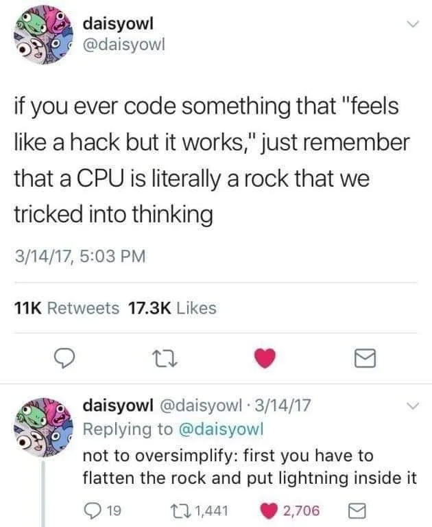
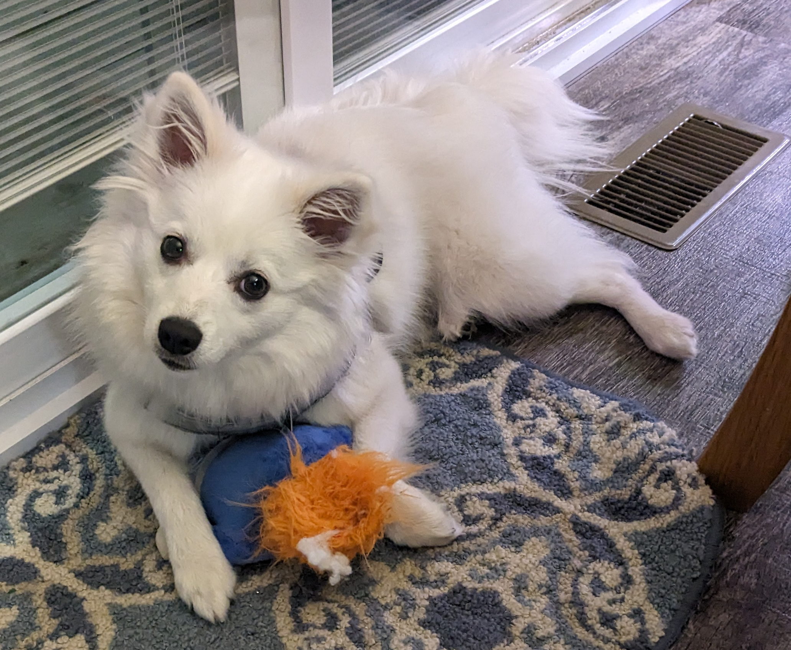
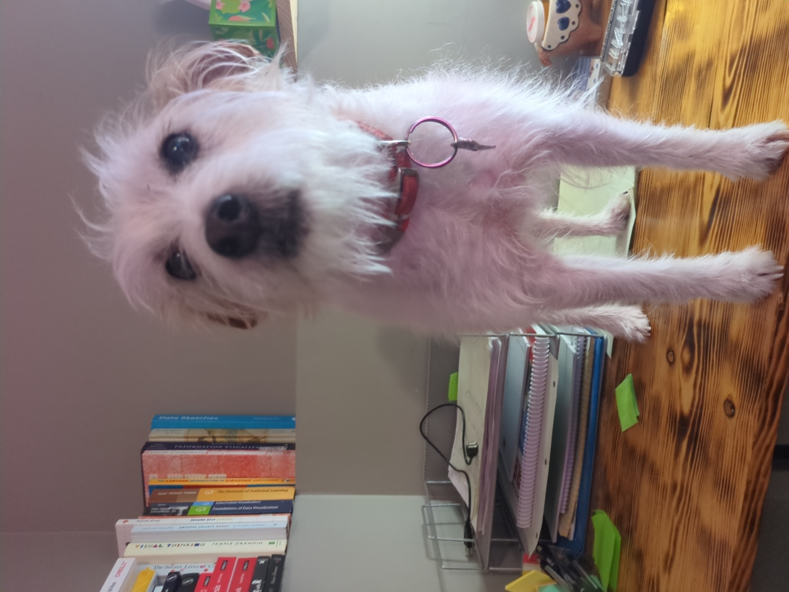
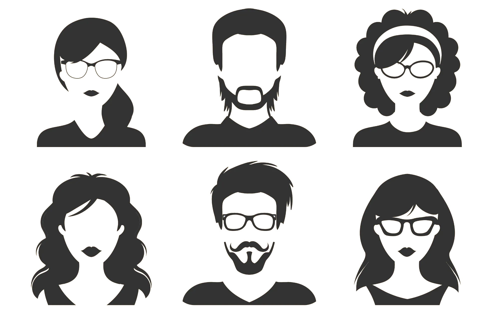

| Week | Topic | Important Dates |
|---|---|---|
| 1 | Exploring the Toolbox | |
| 2 | Introduction to Programming and Variable Types | |
| 3 | Data and Control Structures | |
| 4 | Data Programming | |
| 5 | Reading and Exploring Data | |
| 6 | Data Cleaning and Manipulation | |
| 7 | Data Joins &Transformations | |
| 8 | Graphics | |
| 9 | Fall Break & Midterm Exam | Midterm: Oct 23 |
| 10 | Reproducibility & Documents | |
| 11 | Functional Programming | |
| 12 | Simulation | |
| 13 | Simulation | |
| 14 | Thanksgiving | |
| 15 | Interactive Graphics | |
| 16 | Final Part 1 | |
| 17 | Final Exam | Final: Dec 17 |
Stat 850 Introduction

Slides
Goals for Today
Syllabus Q&A
Install software:
- R
- Python
- quarto
- RStudio
- git
Stretch goal: set up Git
Syllabus
Contact Info
Email: susan.vanderplas@unl.edu
Office: 343D Hardin Hall North Wing
Office Hours:
https://calendly.com/drvanderplas/officehours
Self-serve, by Zoom unless you specify otherwise.
Tentative Schedule
Course Rhythm
| F | S | S | M | T | W | R | F | |
|---|---|---|---|---|---|---|---|---|
| Week before | Week Start | |||||||
| Textbook | Skim | Read | Work Examples | Reading Quiz | Assignment-focused review | Review difficult concepts | Summarize important concepts | |
| Homework | Accept assignment & pull | Read assignment | Work in class | Work at home (if necessary) | Work in class | Submit assignment | ||
| Contextual Reading | Read articles | Read articles & summarize |
Grading
| Assignments | Weight |
|---|---|
| Reading Quizzes & Participation | 10% |
| Weekly Homework | 50% |
| Midterm | 20% |
| Final | 20% |
Grading
| Letter grade | X + | X | X - |
|---|---|---|---|
| A | 96.5 | 93.5 | 89.5 |
| B | 86.5 | 83.5 | 79.5 |
| C | 76.5 | 73.5 | 69.5 |
| D | 66.5 | 63.5 | 60.5 |
| F | <60.5 |
Exams
Midterm and Final
In class component + take-home component
Final take-home component will happen during “dead week”
Exams will include at least one response question from the contextual readings
AI Use Policy
Using AI to write code (Don’t!)
Using AI to explain an error (Ok)
Using AI to write explanations (Don’t)
If you use AI
- Document the use, version, input, and output
- Provide a diff of your submission vs. the AI output
Oral Exams
I reserve the right to replace any grade with an oral exam on your submission
Allows me to clarify how much you understand when that isn’t clear
Helps when I write an ambiguous question or you miss a key part of a question
If you can’t explain your code/answer you don’t get any credit
Some Things About Me


Class Picture

Preview: Thursday
Set up Git
How to submit homework with Github Classroom
Git concepts: Push/Pull
Reminders
- Homework due Friday night